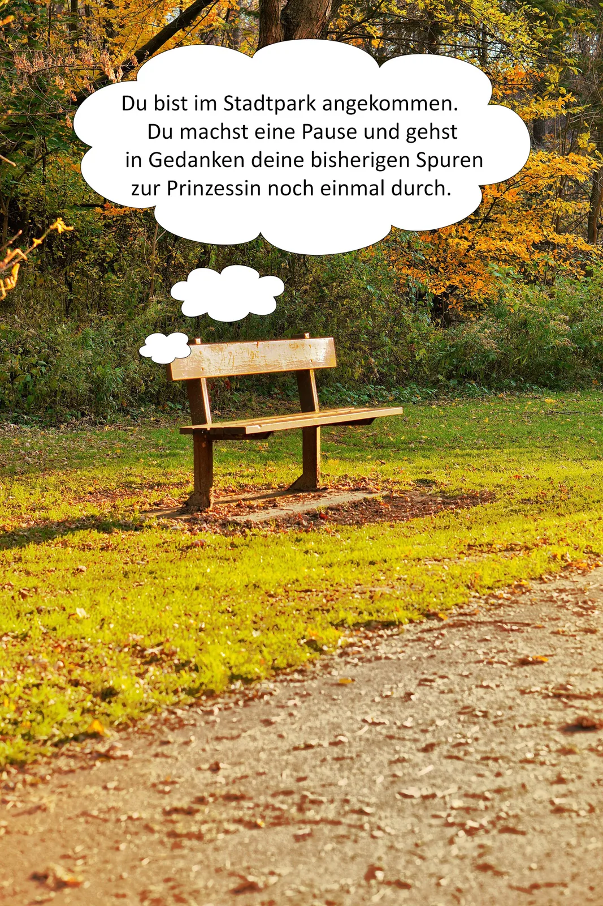

Ein Stadtspiel durch Lichtenstein
Die verschwundene Prinzessin
Hört her, ihr tapferen Sucher und wackeren Entdecker! Seit vielen Nächten ist es still im Schloss – zu still.
Dein Auftrag
Folgt ihren Spuren durch die Stadt, löst Rätsel und entdeckt die versteckten Hinweise.
Wo ist sie?
Allein oder gemeinsam
Spielt auf mehreren Geräten
Eine Person erstellt einen Raum. Alle anderen treten mit dem sechsstelligen Code bei – am PC oder Smartphone.


Station 1
Schloss Lichtenstein
Du kommst am Schloss an. Die Hauptbausubstanz steht hier seit dem 16. Jahrhundert. Eine Gruft und unterirdische Gänge erzählen bis heute von der Vergangenheit.
Mehr über das Schloss
Ein Höhepunkt ist die Schlössernacht mit Musik, Führungen und regionalen Köstlichkeiten. Von der Angergasse führen 178 Schlossstufen über 34 Höhenmeter zum Schloss.


Versteckter Hinweis
Findest du den kleinen Zettel?
Tippe im Bild auf den weißen Zettel in der Steinwand.

 Das Foto bleibt auf deinem Gerät und wird nicht hochgeladen.
Das Foto bleibt auf deinem Gerät und wird nicht hochgeladen.

Station 2
Altmarkt

„Den Altmarkt, ja den kenn ich wohl. Zu meiner Zeit war da immer was los – Händler, Kinder und Musikanten.“
Vielleicht wurde die Prinzessin hier gesehen. Tauche mit den drei Audios in die Welt von früher ein.
Der Pranger
Wissenstest
Station 3
Stadtbibliothek

Du bist vor der Stadtbibliothek angekommen. Gehe hinein und schau dich um.
Was gibt es hier?
Neben Büchern findest du Zeitschriften, Musik-CDs, Hörbücher, Filme, Tonies, Tiptoi-Stifte und E-Books. Im Sommer lockt ein Lesegarten mit Café.
Welches Buch fällt dir ins Auge?
Tippe auf die goldene Krone im Bücherregal.

Station 4
Stadtpark

Spuren verbinden
Spiele den LearningSnack
Öffne das Minispiel in einem neuen Fenster. Das Lösungswort brauchst du hier zum Weiterkommen.
LearningSnack öffnenStation 5
Neumarkt

Die Prinzessin ist nirgends zu sehen. Dir fallen zwei Nachtwächter auf – einer scheint aus einer anderen Zeit zu stammen.
Deine Entscheidung
Welchem Sinn vertraust du?
Station 7
Goldener Helm
Oh nein … der Magen muss weiter knurren. Das frühere Hotel und Gasthaus „Goldener Helm“ ist heute eine Senioren- und Pflegeeinrichtung.
Warum heißt das Haus so?
Der Name könnte mit dem Wappen der Schönburger zusammenhängen. Im früheren Wappen von Callnberg war ein Spangenhelm mit Grafenkrone abgebildet – sicher belegt ist diese Erklärung jedoch nicht.
Zum Glück liegt das Restaurant Athos gleich gegenüber, über die Straße und links um die Ecke.
Station 8
Restaurant Athos

„Oh nein! Unser Chefkoch ist ausgefallen. Du musst uns in der Küche aushelfen!“
Koche Schnitzel mit Gemüse. Welche Zutaten gehören in den Topf und welche in die Pfanne?
Küchenhilfe
Tippe für jede Zutat auf das passende Kochgefäß.
 Topf
Topf Pfanne
Pfanne

Das Finale
Du hast die Prinzessin gefunden!
In letzter Minute huschst du in den Saal. Als du dich nach links wendest, stockt dir der Atem: Neben dir sitzt die Prinzessin!
„Ich wollte einfach einmal dem ganzen Hoftrubel entfliehen – ein bisschen durch meine Stadt streifen, ohne dass mich jemand erkennt.“
Herzlichen Glückwunsch und danke, dass du mitgespielt hast. Wir wünschen dir noch viel Freude beim Entdecken von Lichtenstein!
Mit Unterstützung von